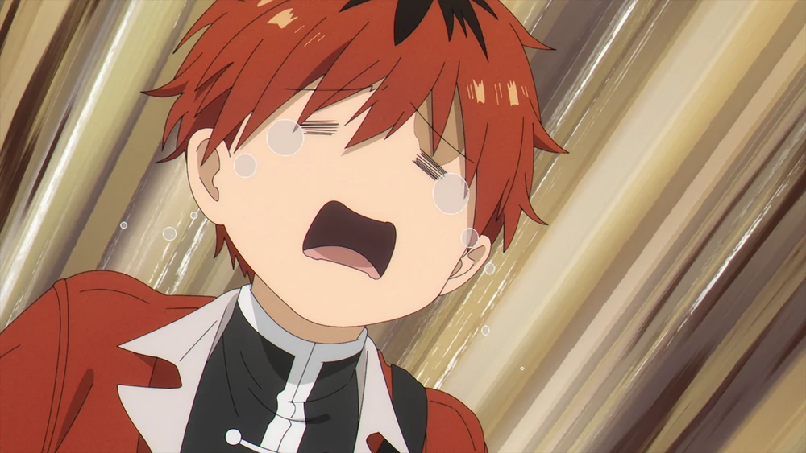
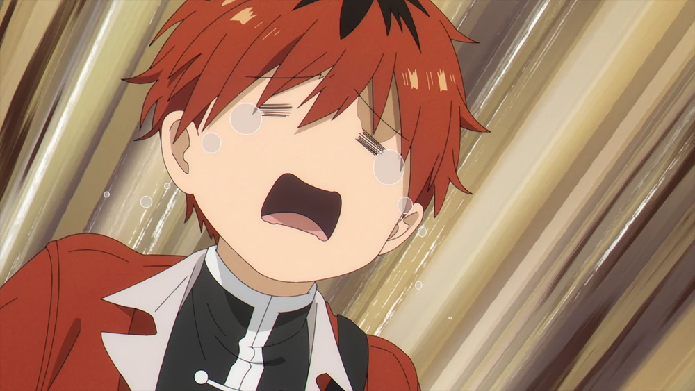
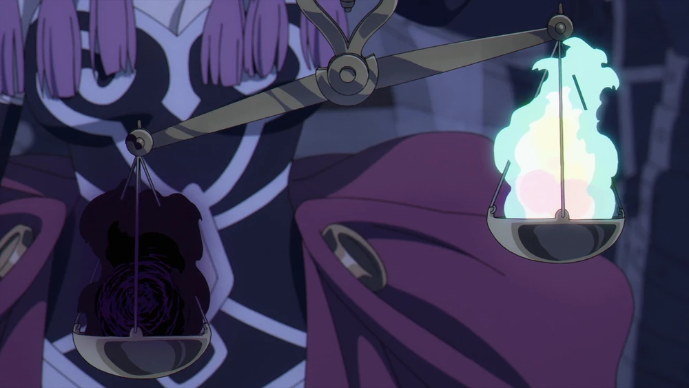
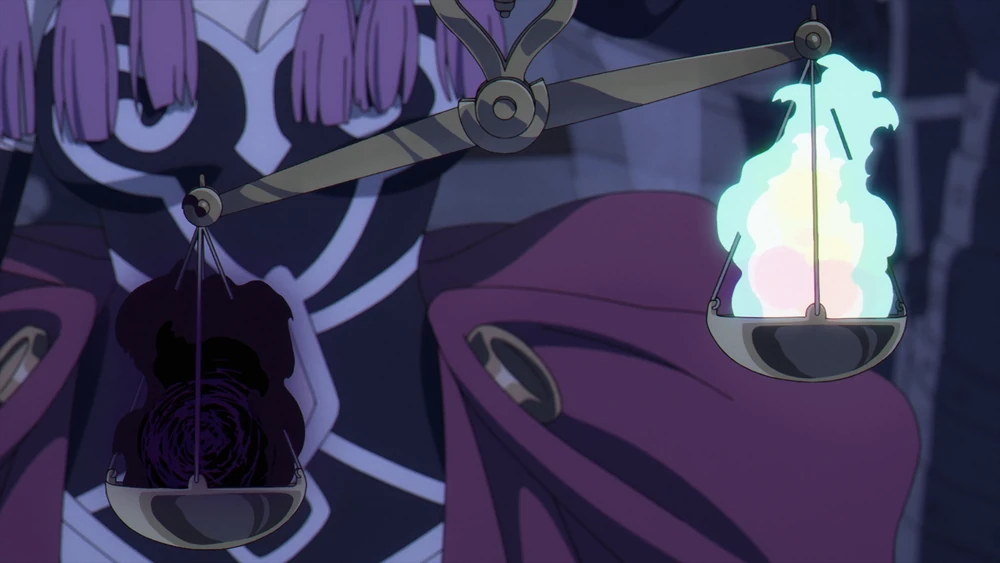
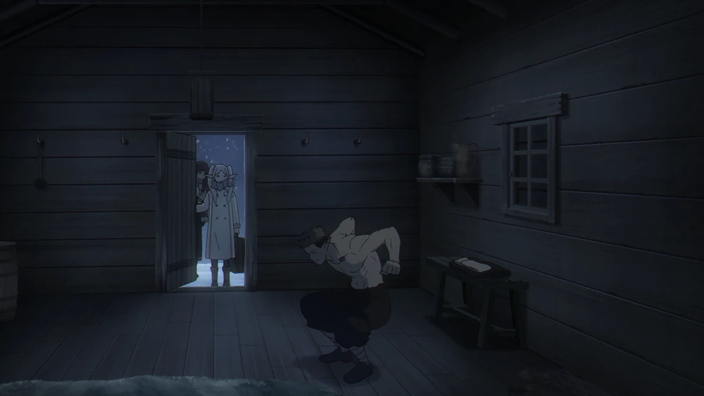
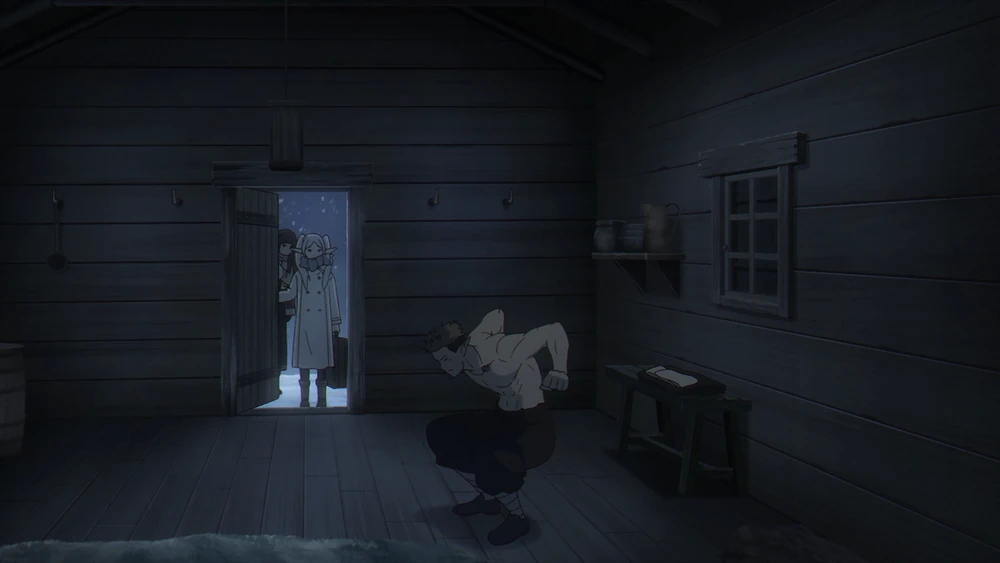
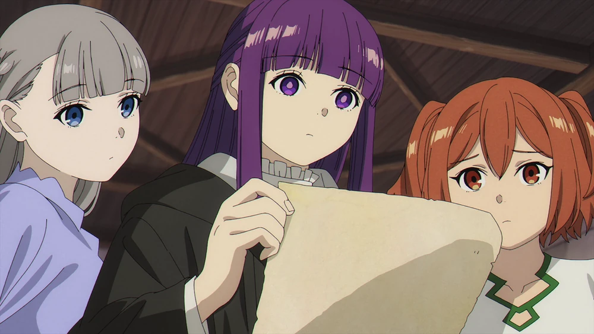
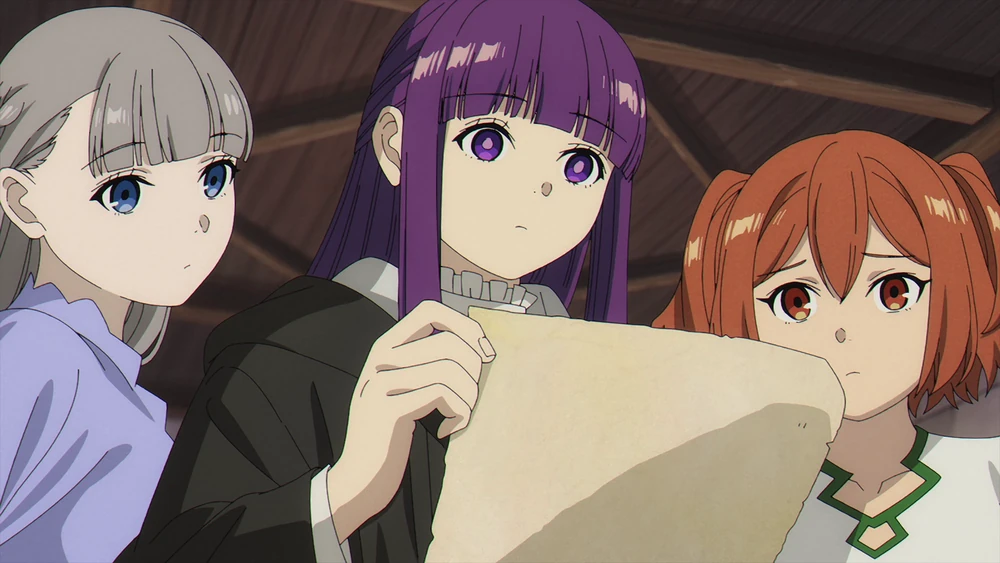

Beyond Journey's End Arc
After a ten year's journey, the elven Mage Frieren has defeated the Demon King along with the rest of her party - the Hero Himmel, the Warrior Eisen, and the Priest Heiter. Fifty years later, after the death of the Hero of the party, the long-lived Frieren sets out on a journey to Aureole along with her old companions' disciples in order to better understand the the meaning and emotions behind her companions' fleeting lives and to speak with Himmel once again.
-
Episode 1: The Journey's End
-
Episode 2: It Didn't Have to Be Magic...
-
Episode 3: Killing Magic
-
Episode 4: The Land Where Souls Rest
-
Episode 5: Phantoms of the Dead
-
Episode 6: The Hero of the Village
-
Episode 7: Like a Fairy Tale
Frieren begins to teach Fern the basics of long-range magic, emphasizing that Fern's mana output and strength will require years of training to master. However, her control over mana, an aspect many mages struggle with, is very high. Over the next four years, Frieren continues to decipher the grimoire while Fern diligently trains under the elf's tutelage and alone in the woods.
When asked about child's progress by Heiter, Frieren explains that she has learned more than most people would in a decade and that she is studying a little too hard. Suddenly, Heiter collapses, and he later becomes bedridden. Heiter remarks that it is miracle that he had been mobile for so long and Frieren ensures him that she will decipher the grimoire quickly. The elf then tells Fern to pause her training on the cliff to stay by Heiter's side, but Fern rejects this notion, saying that she has to be able to hit the rock with her magic before the priest's death.


Right after the events of the previous episode, Eisen mentions that the mere 10-year journey will be one one-hundredth of Frieren's life as he reminds her of the interaction they had when the party first observed the Era Meteors together. Eisen smiles, finding it funny how a mere one one-hundredth of Frieren's life has changed her as memories of the past to the present begin to flash in Frieren's mind. Frieren and Eisen bid farewell to each other as Frieren and Fern leave. As the two walk, Fern tells Frieren that her time with Frieren so far has taken up half her life. Frieren smiles and tells her that it will be greater than that from now on.
 


The Hero Party is depicted walking, having obtained a grimoire purportedly authored by the Great Mage Flamme as a reward for their monster-slaying endeavors. Frieren notes that Flamme-attributed books are usually forgeries, though she remarks that this one is the best imitation she's come across. Himmel fails to grasp the grimoire's value, while Heiter suggests that exposure to constant imitations might lead one to doubt the existence of the real thing. Eisen adds that Flamme, humanity's magic founder, is akin to a fairy tale, prompting Frieren to reflect on time's passage and her being the only one to remember Flamme's face.
In the present, Frieren wakes up early to Fern's surprise. Fern insists on praising Frieren for waking up early, leading Fern and Stark to indulge her with food and massage, much to Frieren's delight. Twenty-eight years after Hero Himmel's passing, Frieren, Fern, and Stark assist a merchant in clearing a landslide on the Eng Road in the Northern Lands. The merchant expresses gratitude, while Stark questions the necessity of their labor, suggesting they could fly the merchant's cart to the other side. Frieren insists on clearing the blockage for the benefit of future travelers, at least according to Fern, and chides Stark for his perceived selfishness. Stark retorts, refusing to accept criticism from her.

-
Chapter 1: The Journey's End
-
Chapter 2: The Priest's Lie
-
Chapter 3: Blue-Moon Weed
-
Chapter 4: The Mage's Secret
-
Chapter 5: Killing Magic
-
Chapter 6: New Year's Festival
-
Chapter 7: The Land Where Souls Rest
-
Chapter 8: One One-Hundredth
-
Chapter 9: Phantoms of the Dead
-
Chapter 10: Solar Dragon
-
Chapter 11: The Hero of the Village
-
Chapter 12: The Northern Checkpoint
-
Chapter 13: Liberation Festival


 


 



 
